On the Road,
Singapore to Hanoi by Bicycle
My first blog: A recount of our tour to Vietnam
I am writing this in 2024, 2 years after the expedition so I will try to remember as much detail as I can for the first day and just cover some key moments for the rest of the trip after.
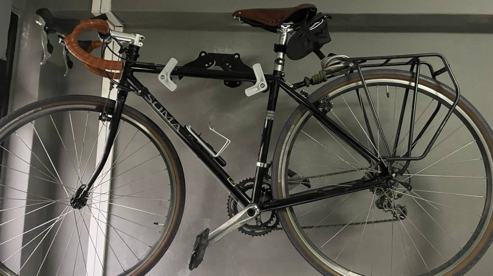
Soma on the wall
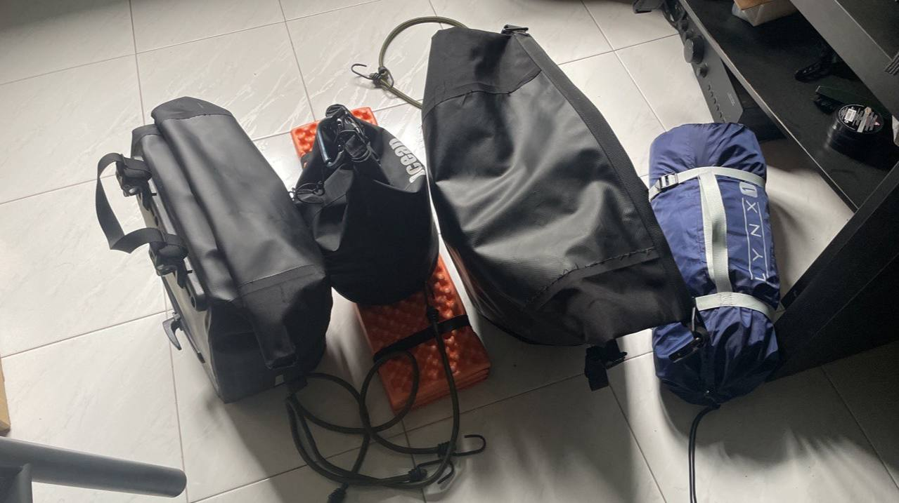
Panniers packed and ready to go
I sat in my room staring at my Soma hanging on the wall, at my fully filled panniers which were ready to explore the world. Physically, I was ready but mentally, not so much. Pre trip anxiety kicked in, which was a first for me. "Heck it let's go", I thought to myself, I didn't know what to expect, but that's the fun part about it.
I took one last look at my room, said my goodbyes to my family and cycled off to Woodlands to spend the night at a friend of Aaron's so that we can clear immigrations as early as possible the next morning. As I was cycling along Woodlands avenue 12, I felt my bike shaking, I looked down to find a punctured rear tyre. "Shag" was the only word I could think of — not a great start to the month long bicycle tour. It was already 1:30 in the morning, I quickly get off and replaced the tube and proceeded to cycle to the apartment to get some sleep.
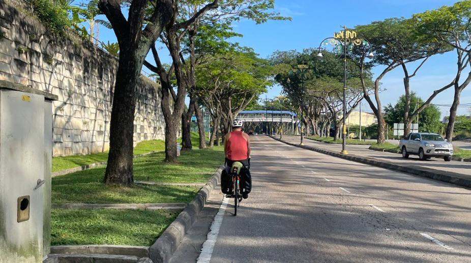
Riding in Malaysia
We woke up at around 5:30 in the morning, left the apartment and immediately made our way to Woodlands checkpoint. It felt weird riding this early in the morning, Aaron and I only cycled at night in Singapore, so getting used to this won't be easy, then again we have more than enough time.
We were unsure of which lane to be in so we stayed on the left most lane which led to the first auto gate, we tried to enter but the machine wouldn't detect us. The ICA officer came to us to "scold" us telling us to use the manual gate at the end of the road. (Also, all this happened while Aaron was wearing the hotdog bun suit lmao) The malay ICA lady at the manual gate was visibly confused when she saw a hot dog pushing a bicycle up to her, we tried to explain the whole pun and the fundraiser but she didn't understand — or maybe she just didn't find it funny. She checked our passports and let us through regardless. We cleared Malaysian immigration and there we were, we were in MALAYSIA.
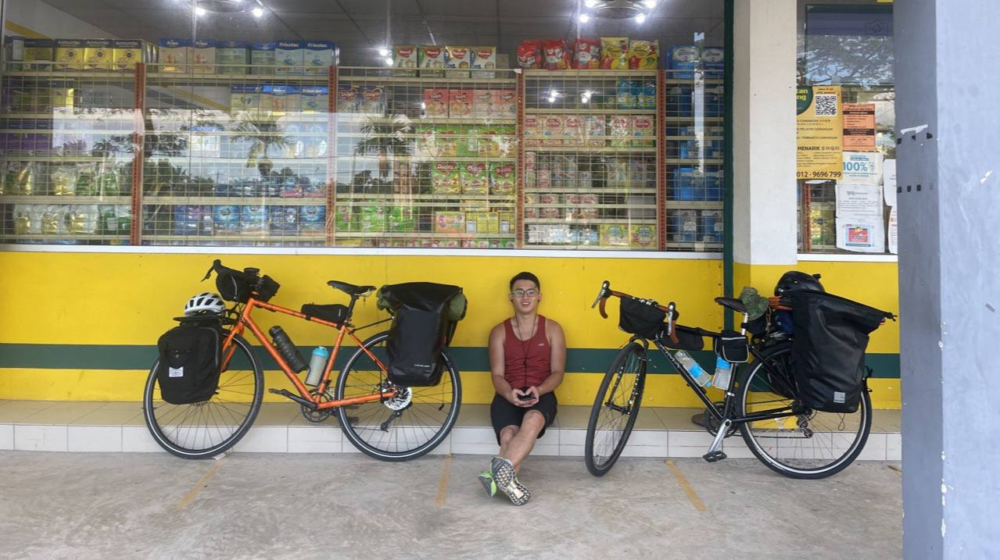
Resting at petrol station
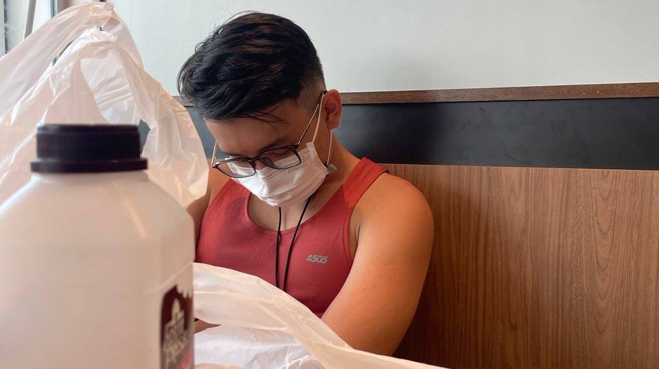
Sleeping at Family Mart
The roads in Johor Bahru were pretty crazy. We ended up on the wrong highway and had to carry our bikes out of the road and find correct way out. We eventually made it out and found a petrol station — the first of many petrol station pit stops — to resup on water before continuing our journey.
After 30 minutes of riding, we stopped at some random chinese food stall in Skudai to have our breakfast. I forgot what we had but I remember it was pretty alright. We rested for abit and planned our route for the rest of the day before setting off for the first long ride. We cycled out of JB on Jalan Besar, a smaller road parallel to North-South Expressway, stopping every 2-3 hours to rest. We stopped at a Family Mart in Simpang Renggam in the afternoon for lunch, at this point we were extremely lethargic from getting used to the new work rest cycle. We rested here for almost 2 hours.
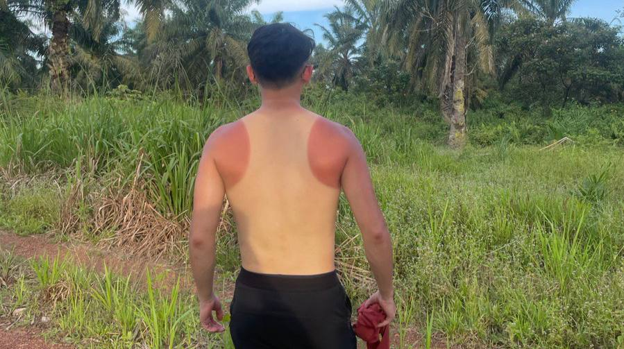
Aaron's tan line
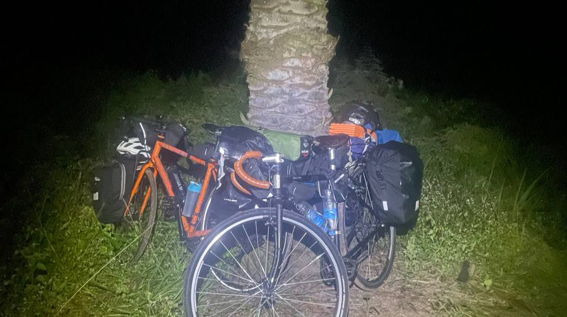
The campsite
We left the comfort of Family Mart and continued pedaling towards Yong Peng, which was our goal for the day. We would pitch our tent at a very nice water body named Tasik Berlian that we found on Google maps just 10km after the town. We made a quick dinner stop, after 40km of cycling, at a restaurant in Ayer Hitam at around 4:30pm. We fell asleep while waiting for our food; the afternoon sun on the way here was "no joke". Food came, we ate, it was still quite early in the day so we packed some food just in case we were hungry at our campsite later at night.
Last 40 km of the day, sun was setting, everything was going really well. As we approached the pinned location on our map, we were cycling on gravel roads and the place looked different from the map. The water body had been fenced off completely and surrounded by dense plantation. Not giving up, we pushed our bicycles through thick vegetation along the fence on muddy terrain, hoping to find a way into the reservoir. We didn't. It was getting dark already so we made do with whatever little space we could find in the plantation and pitched our tent to rest for the night. It was not a pleasant spot to sleep in at all — 3/10.
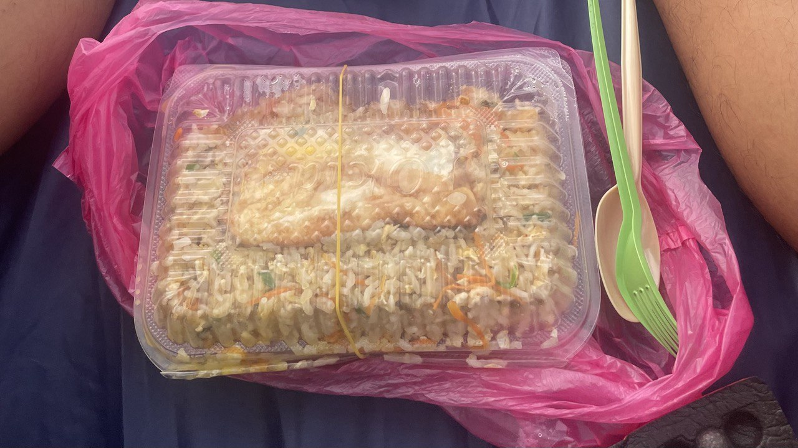
Fried rice with egg
Finally, after over 10 hours of cycling and about 130km covered, we have reached our first night of our month long tour. Saddle sores, burnt skin and horrible diet — despite all that, I am still excited for what's to come. We sat in our tents, ate our packed food and planned tomorrows route before recharging.
Day 2 — Tasik Berlian to Bahau, 140km
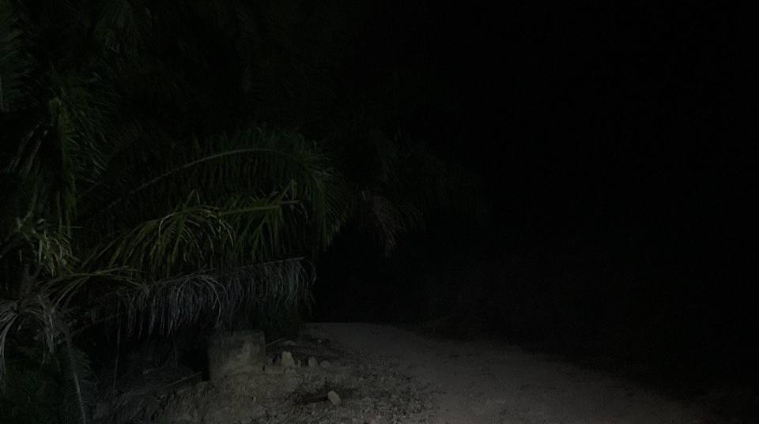
Route back to the road
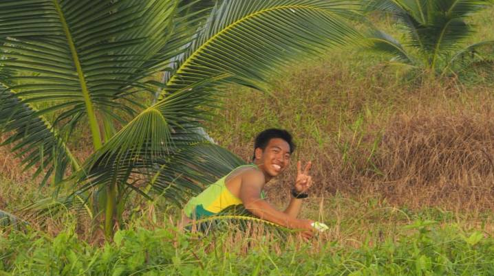
Taking a dump
Another long day of cycling, this time the saddle sores

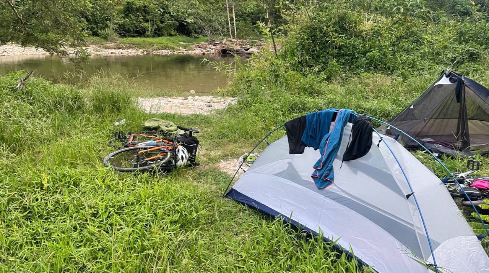
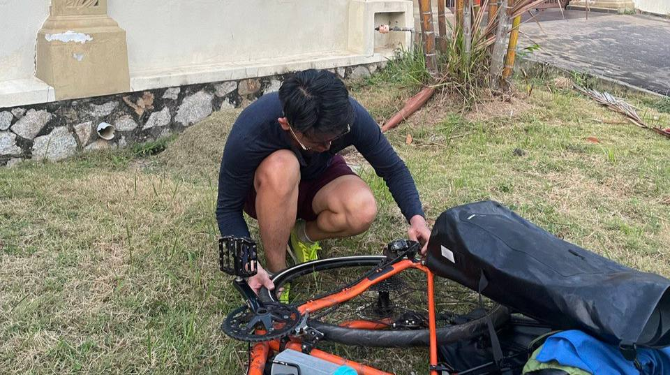
First flatty for Aaron
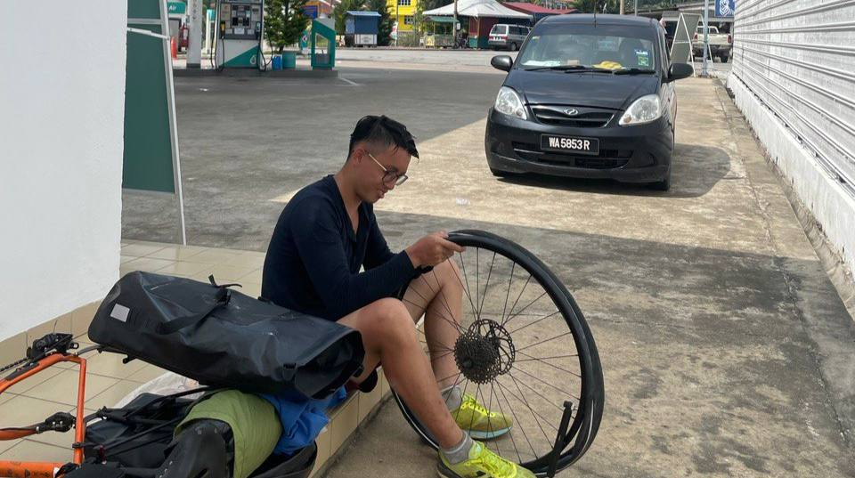
Second flatty
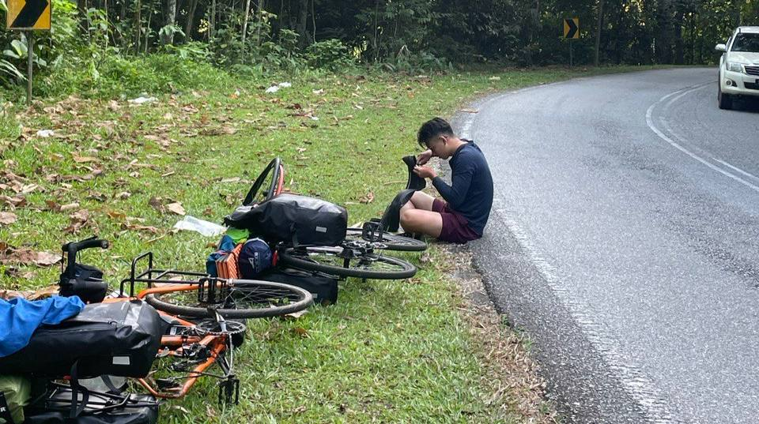
Third flatty

Day 01: Singapore > Tasik Berlian 130km
Day 02: Tasik Berlian > Bahau 140km
Day 03: Bahau > Karak 150km
Day 04: Karak > Fraser Hill > Tanjong Malim 135km
Day 05: Tanjong Malim > Ipoh 130km
Day 06: Ipoh > Butterworth > Georgetown 165km
Day 07: Rest
Day 08: Rest
Day 09: Butterworth > Bukit Kayu Hitam 130km
Day 10: Bukit Kayu Hitam > Khao Bo La Reservoir 167km
Day 11: Khao Bo La Reservoir > Khlong Chang Waterfall 100km
Day 12: Khlong Chang Waterfall > Surat Thani 120km
Day 13: Rest
Day 14: Surat Thani > Chumphon 140km
Day 15: Chumphon > Thap Sakae 212km
Day 16: Thap Sakae > Pran Buri 130km
Day 17: Pran Buri > Bangkok 170km
Day 18: Bangkok > Ched Khot Waterfall, Saraburi 130km
Day 19: Ched Khot Waterfall > Suan Madeua Waterfall, Lopburi 75km
Day 20: Suan Madeua Waterfall > Dan Khun Thot 80km
Day 21: Dan Khun Thot > Nai Mueang, Chaiya Phum 90km
Day 22: Nai Mueang > Khon Kaen 120km
Day 23: Rest
Day 24: Rest
Day 25: Khon Kaen > Kalasin PTT Petrol Station 90km
Day 26: Kalasin > Phu Pha Yon National Park 100km
Day 27: Phu Pha Yon National Park > Nakhon Phanom 100km
Day 28: Bus to Thakhek, Laos (rest)
Day 29: Thakhek > Nam Theun 90km
Day 30: Nam Theun > Ha Tinh, Vietnam 130km
Day 31: Ha Tinh > Km0 Hotel, Nghe An 90km
Day 32: Km0 Hotel, Nghe An > Hotel Lan Anh, Thanh Hoa 140km
Day 33: Hotel Lan Anh, Thanh Hoa > Hanoi! 170km
Total days: 33
Days rested: 6
Distance travelled: ~3245km
Money raised: $4588
Punctured tyres: 6
Pad khrapow: too many
Banh mi: too many